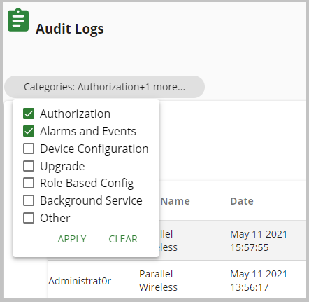

Configure Audit Log Categories
Use this task to select certain categories to filter audit logs that pertain to user operations.
- In the navigation bar, click Audit Logs.
- In the Audit Logs window, click the Categories field.
-
In the pop-up dialog box, check the following audit log categories that are
available to be used as a filter for user activity. The following table
describes these audit log category filters.

Category
Description
Authorization checkbox Check the check box to display audit logs for when users are authorized. Alarms and Events Check the check box to display audit logs for when alarms and events are caused by user activity. Device Configuration Check the check box to display audit logs for when a device configuration was entered or changed. Upgrade Check the check box to display audit logs for when a device upgrade was performed. Role Based Config Check the check box to display audit logs for when a Role-based Access (RBAC) change was made by a user. Background Service Check the check box to display audit logs for any background services are accessed by a user. Other Check the check box to display any miscellaneous activities are caused by user activity. - Click SAVE AS... to save this filter.
- Click SAVED FILTERS to select the filter that was created to see audit logs for this filter.